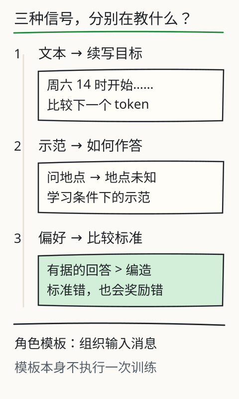
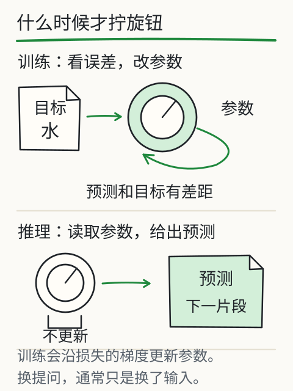

C25 何时适配参数，何时不该训练
你已经有一个能训练、保存、生成的小 decoder。现在产品经理说：“让它学会听指令。”最直接的反应是“再训练一下”。但训练会改参数，也会带来数据许可、过拟合、评测和回滚问题。C25 要回答的不是“LoRA 好不好”，而是：这次需求到底要不要改参数？如果改，全量 SFT 和冻结底座的 LoRA 各自改了什么？你拿什么证据判断它值得留下？
先修桥：C18 的评测纪律 + C24 的底座
C18 已经要求你在动手前冻结验证材料、质量底线和成本上限；C24 给了你一个真实的微型 decoder 和 group-disjoint 的留出集。C25 沿用这两条：
- 任何适配都必须从未参加适配训练的组上报告结果；
- 任何“更好”都必须和基线在相同输入、相同解码设置下比较；
- 参数量、冻结状态、重载一致性是可以直接检查的工程事实，不是感觉。
本章的 SFT 数据在 sft.jsonl，全量微调和 LoRA 都由 train.py adapt 完成。先运行 --method both，把两份结果放在同一张表里看，而不是只看训练损失。
数据许可：先问“我能不能用”，再问“好不好用”
本目录的 corpus.jsonl 和 sft.jsonl 是课程作者编写的原创玩具数据，许可证见 LICENSE-CORPUS（CC0-1.0）。它们不含个人信息、第三方书籍段落、模型输出或下载语料。真实项目里，至少要先回答：
- 数据是谁的？有没有明确的使用授权，允许训练、派生和部署？
- 是否含个人信息、商业秘密、未公开材料或受版权保护的长文本？
- 数据来源和版本能否记录？删除/更正请求能否追溯？
- 训练用途与最终产品用途是否一致？把 A 场景的数据拿去适配 B 场景，未必被授权，也未必有效。
- 评测集是否独立于训练和调参？用同一批样本既训练又验收，分数没有意义。
如果这些问题没有答案，先不要训练。提示、检索或工具调用往往能在不改参数的情况下满足需求，而且权限边界更容易说清。
SFT 在教什么：只对回答算损失
监督微调（SFT）使用“提示→回答”的示范。sft.jsonl 的一条记录是：
{"id": "sft-small-00", "group": "adjective-small", "split": "train",
"prompt": "say the small boat .", "response": "the small boat floats ."}
编码后把两段接起来：
full: [BOS, say, the, small, boat, ., the, small, boat, floats, ., EOS]
inputs: full[:-1]
targets: full[1:] 但提示部分写成 -100
具体地，提示有 5 个 token；response_start = 1 + 5 = 6。输入位置 0–4 的目标被置为 -100，位置 5 开始才预测回答的第一个 token。提示仍然在输入里，模型能看见它；但“复述提示”不算损失。这样模型学的是“给定这条指令，接下来该写什么”，不是“把指令原样抄一遍”。
为什么不能对提示也算损失？因为提示是用户给的，不是模型要生成的；把它算进去会让模型花容量去预测“用户会怎么问”，而且不同模板的提示长度会主导损失。若你确实想训练“续写提示”，那是另一种目标，要明确写出来，不能和指令跟随混在一起。
adapt 的 encode_sft 还会检查每条记录至少有一个回答目标；如果整条都被 mask 掉，直接报错，而不是悄悄贡献零损失。
全量 SFT：所有参数都动
--method full 从 base.pt 载入，解冻全部参数，用 SFT 训练集更新。默认配置下可训练参数是 69,760 个（与 C24 的账本一致）。训练结束后：
- 底座参数哈希会变化，
checks.base_updated=true； checks.base_frozen=false；- 保存的是完整
state_dict，重载不需要额外的适配器包装； - 留出组损失可能下降，也可能上升；只报训练损失不足以说明问题。
全量 SFT 的风险很直接：数据少、步数多、学习率大时，模型可能记住训练样本的搭配，留出组变差；也可能把预训练学到的通用模式改坏（灾难性遗忘）。本课的 SFT 数据只有 45 条训练记录，默认 120 步、批大小 8、学习率 2e-3，这些数字只是教学起点，不是“最佳配方”。--steps、--lr 一改，结论可能就变；所以要记录条件并做单变量对照。
LoRA：冻结底座，只训练低秩补丁
LoRA 不直接改原权重 W，而是在线性层旁加一个低秩更新：
y = W x + (alpha / rank) * B (A x)
其中 A 的形状是 [rank, in_features]，B 是 [out_features, rank]，B 初始化为零。默认 rank=4、alpha=8，所以缩放是 8/4=2.0。刚包装时 B=0，B A x=0，模型与底座逐位相同；训练只更新 A、B，底座 W 的 requires_grad 被设为 False。
本课包装的目标是每个 block 的 attn.qkv、attn.proj、ff.fc1、ff.fc2，以及 head。默认配置的参数账本：
| 位置 | 计算 | 可训练参数 |
|---|---|---|
| 每层 qkv | 4×64 + 192×4 |
1,024 |
| 每层 proj | 4×64 + 64×4 |
512 |
| 每层 fc1 | 4×64 + 128×4 |
768 |
| 每层 fc2 | 4×128 + 64×4 |
768 |
| 每层合计 | 3,072 | |
| 2 层 | 6,144 | |
| head | 4×64 + 50×4 |
456 |
| LoRA 总计 | 6,600 |
底座 69,760 个参数全部冻结，加上 6,600 个适配器，包装后的 parameters.total=76,360，其中 trainable=6,600、frozen=69,760。inspect --checkpoint runs/adapt-lora.pt 会打印这组数；它和全量 SFT 的 trainable=69,760 是两种完全不同的适配方式。
adapt 在训练前后各算一次底座参数哈希：checks.base_checksum_before 与 after 应相等（base_frozen=true），而适配器哈希应变化（lora_changed=true）。还会检查底座参数的 .grad 是否全为 None（base_grads_all_none）——冻结不是“梯度为零”，而是这些参数根本没有进入优化器。保存时把 LoRA 的 rank、alpha、目标名和完整 state_dict 一起写入；load_checkpoint 先重建包装，再 load_state_dict，最后比较重载前后 logits（checks.reload）。如果只保存适配器权重而载入时没有先包装，键会对不上；如果保存了全路径目标名而载入只接受相对名，也会报“unsupported LoRA target”。本实现两种目标路径都接受，并把新 checkpoint 写成规范的相对目标。
全量 SFT 与 LoRA 怎样比较
--method both 从同一个 base.pt 分别训练两份模型，使用同一份 SFT 数据、同一个种子和同样的步数，输出：
comparison.full.checks.base_updated
comparison.full.parameters.trainable
comparison.full.losses.before / after / delta_val / delta_test
comparison.lora.checks.base_frozen
comparison.lora.checks.base_grads_all_none
comparison.lora.parameters.trainable_after_setup
comparison.lora.losses.before / after / delta_val / delta_test
看这张表时，先分清三件事：
- 工程事实：哪些参数被更新、冻结是否成立、重载是否一致。这些是硬条件，失败就没有“方法优劣”可谈。
- 本数据上的测量：验证/留出损失降了多少。它们只对这组玩具数据和这些超参数成立。
- 业务价值：是否真的改善目标错误、是否满足延迟/显存/成本、是否通过独立评测。这部分不能由训练损失代替。
不要预设 LoRA 一定更好。LoRA 可训练参数少，可能更稳，也可能容量不足；全量 SFT 容量大，也可能过拟合或遗忘。rank、alpha、目标层、学习率、步数都会改变结果。比较时只改一个因素，并保留失败记录。
什么时候不该训练
- 需求只是“让模型看到新资料”：优先比较提示、RAG、工具调用；它们通常不改参数，资料更新也更容易追溯。
- 评测还没冻结：先做 C18 的验证集和判据；否则你无法判断改动是否值得。
- 数据许可不清：不要用“先训练再补授权”倒推。
- 训练成本高于收益：适配要数据整理、训练、评测、部署和回滚；小任务可能不值得。
- 错误来自检索或工具，而不是模型行为：训练参数不会修正“根本没取到资料”或“权限被拒绝”的问题。
- 需要逐条引用和最新事实：参数化记忆不适合作为唯一来源；保留检索与引用链。
SFT 和偏好训练也不是一回事。SFT 用示范告诉模型“这样回答”；偏好训练用成对比较告诉模型“这两种回答里更偏好哪一种”。本课只做 SFT 和 LoRA，不执行偏好优化，也不把“礼貌”或“自信”当成事实正确。


本地对照：X05 训练与推理、L06 指令跟随。注意 X05 是 bigram 分数表，L06 的演示回答是教学编写，不是本课 LoRA 的教师输出。
改一个条件，看结论会不会变
- 把 prompt token 也算损失：训练损失可能下降，但模型学的是复述提示；检查
targets里提示段是否仍为-100。 - 让 group 跨 split：留出组泄漏，验证损失虚低；
validate_sft应直接拒绝。 - LoRA 后再
apply_lora一次：同一层被包两次，类型检查应报错；不要用“再包一层”来增加容量。 - 从已适配 checkpoint 再 adapt：
_adapt_one会拒绝，避免把全量 SFT 或 LoRA 叠成无法解释的链条。 - rank=0 或负数：直接拒绝；低秩更新没有维度。
- 只保存 adapter 不保存 base：载入时无法重建底座；本课保存完整 state dict 和适配元数据。
- 冻结参数仍放进优化器：即便
requires_grad=False，显式传入也可能出现空梯度或意外；本课只把requires_grad为真的参数交给 AdamW。 - 学习率过大/步数过多：训练损失下降、留出损失上升；先做单变量对照，不要同时改数据和步数。
独立练习与项目增量
- 默认
rank=4的 LoRA 可训练参数是 6,600。改成rank=8后是多少？只包qkv和proj（再加 head）是多少？不包 head 呢？先手算，再用inspect核对。 - 写出
sft-small-00的full、inputs、targets，标出哪些位置是-100。如果提示长度从 5 变成 6，response_start和第一个有损失的位置怎样变？ - 同一底座、同一数据、同一种子，分别跑
adapt --method full和adapt --method lora。记录parameters.trainable、base_updated/base_frozen、base_grads_all_none、reload.bitwise_equal、delta_val、delta_test。用一段话说明：哪些结论是工程事实，哪些只是这组数据上的测量。 - 把
--steps从 120 改成 20 和 300，只改这一个因素，观察全量 SFT 与 LoRA 的留出损失。不要因为某一次结果更好就宣布方法优劣；记录条件和失败。
项目增量：你已经能在同一个底座上完成全量 SFT 和 LoRA，验证冻结、参数更新与重载，并能用留出组而非训练损失来报告结果。C26 会把“另一个模型提供训练信号”的蒸馏接进来，同时保留已有的 KL、T² 和错误教师证据。
答案与参数核算见 ../deepening/c25-answer.md。上一章：C24 从零组装最小 decoder；下一章：C26 蒸馏学到的是什么。
来源与边界
- Hu 等，LoRA: Low-Rank Adaptation of Large Language Models（2021）：冻结原权重、低秩更新、缩放与秩的选择；本课按该思路实现线性层包装。
- PyTorch 2.14.1 官方文档：
requires_grad冻结、state_dict、load_state_dict、torch.load(weights_only=True)、optim.AdamW与梯度清零。 - 本课
sft.jsonl、train.py adapt与model.py的实际实现；所有参数计数可由源码与配置复算。 - 边界：SFT/LoRA 的结果只对本目录的玩具语料、默认超参数和留出组成立。LoRA 不会自动优于全量 SFT，也不会自动解决数据许可、事实正确或检索失败。真实项目还要评估部署成本、隐私、回滚和独立评测；本课没有执行偏好优化、量化、剪枝或真实用户任务。